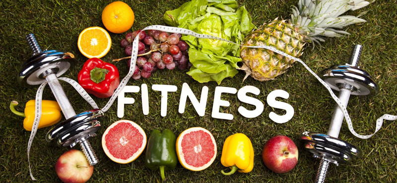

Breaking News
Donald Trump returns to the White House
Former President Donald Trump has been declared the projected winner of the 2024 U.S. presidential election. His campaign capitalized on widespread dissatisfaction with current leadership and economic challenges. Running alongside Senator J.D. Vance as his vice-presidential pick, Trump secured strong support, especially in working-class and rural communities. His return to office comes amidst deep political and cultural divisions, with promises to reshape the Republican Party and introduce sweeping policies, such as tax cuts and stricter immigration law read more | comments(14)
Trending News
Yes, That Viral LinkedIn Post You Read Was Probably AI-Generated

AI-generated writing is now all over the internet. The introduction of automated prose can sometimes change a website’s character, like when once beloved publications get purchased and overhauled into AI content mills. Other times, however, it’s harder to argue that AI really changed anything. For example, look at LinkedIn. The Microsoft-owned social media site for business professionals has embraced AI, even offering LinkedIn Premium subscribers access to its own in-house AI writing tools that can “rewrite” posts, profiles, and direct messages. read more | comments(24)
Entertainment News
Squid Game Season 2 trailer released
Netflix released a new trailer for "Squid Game" Season 2 on Wednesday. The trailer focuses on Player 456, played by Lee Jung-jae, and his reason for returning to the deadly competition. read more
Health and Fitness News
Too Much Sitting Harms the Heart, Even in Folks Who Exercise
New research shows that too much time on sofas and chairs harms the heart -- even among people who get the minimum recommended amount of daily exercise. “Taking a quick walk after work may not be enough" to offset the health dangers of sitting, said study lead author Chandra Reynolds. She's a professor of psychology and neuroscience at the University of Colorado in Boulder. Study lead author Ryan Bruellman said the cohort was relatively young, because "young adults tend to think they are impervious to the impacts of aging. But what you do during this critical time of life matters.” read more